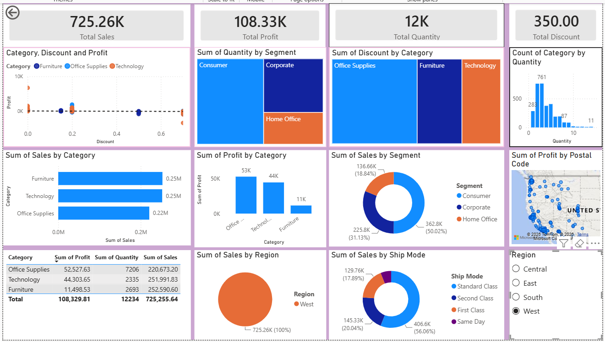
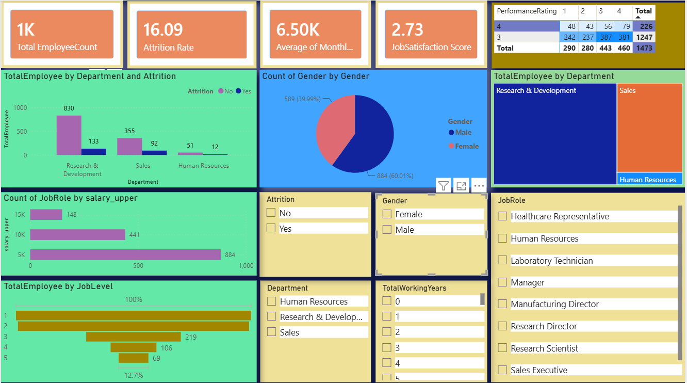
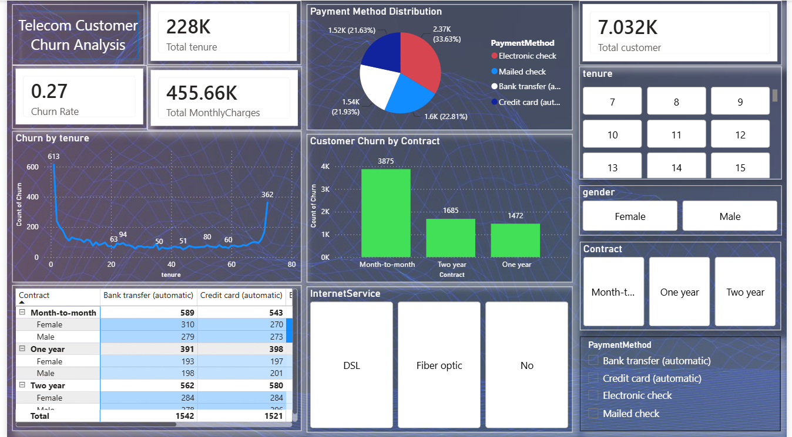

Aspiring Data Analyst · Machine Learning Enthusiast
Turning raw data into decisions. M.Tech in AI & ML from NIT Uttarakhand — building models that generalize, dashboards that communicate, and insights that move the needle.
I'm a postgraduate student pursuing an M.Tech in AI & Machine Learning at NIT Uttarakhand, with a B.Tech in Computer Science as my foundation. My work sits at the intersection of data engineering, machine learning, and visualization.
I've worked across the full analytics pipeline — from cleaning and preprocessing messy datasets to training classification models and communicating results through dashboards. My tools of choice are Python, SQL, and Power BI, with a growing comfort across the broader ML stack.
During my internship as an AI Tools & Data Productivity Intern at Be10x, I gained hands-on exposure to data workflows in a real-world setting — applying AI-powered tools to improve productivity and data accessibility.
Hands-on experience across the data lifecycle — from wrangling raw data to delivering insights.
Real datasets, real challenges, measurable outcomes.
Analyzed a dataset of 284,000+ credit card transactions to build a reliable fraud detection pipeline. The primary challenge was extreme class imbalance — fraudulent transactions represent under 0.2% of the data. Addressed this using CTGAN to synthesize realistic minority-class samples, then benchmarked three classifiers.
Designed and built a full-stack web application for managing student academic records. Implemented role-based secure login, full CRUD operations for results, and structured database storage — reducing manual data handling and improving access for administrators and students alike.

End-to-end analysis of a superstore's sales data — from raw, messy records to a clean, interactive visual story. Covered data cleaning and preprocessing in Python, structured querying in SQL, and a Power BI dashboard surfacing sales trends, regional breakdowns, and category performance.

Transformed raw HR records into actionable workforce insights using a full end-to-end analytics workflow. Cleaned and explored the data in Python, answered key business questions via SQL, and built an interactive Power BI dashboard — revealing the drivers behind employee attrition across departments, roles, and tenure bands.

Built an end-to-end pipeline to understand, predict, and visualize customer churn for a subscription-based telecom business. Went beyond descriptive analysis into predictive modeling — cleaning and exploring data in Python, training a logistic regression model to estimate churn probability, segmenting high-risk customers, querying churn patterns in SQL, and surfacing it all through an interactive Power BI dashboard.
Real-world exposure to data tools and productivity systems.
Verified skills across data analysis, ML, and visualization platforms.
Rigorous technical foundations built at recognized institutions.
Open to data analyst and data scientist roles. Reach out via email or connect on LinkedIn — I respond within 24 hours.
Download Resume